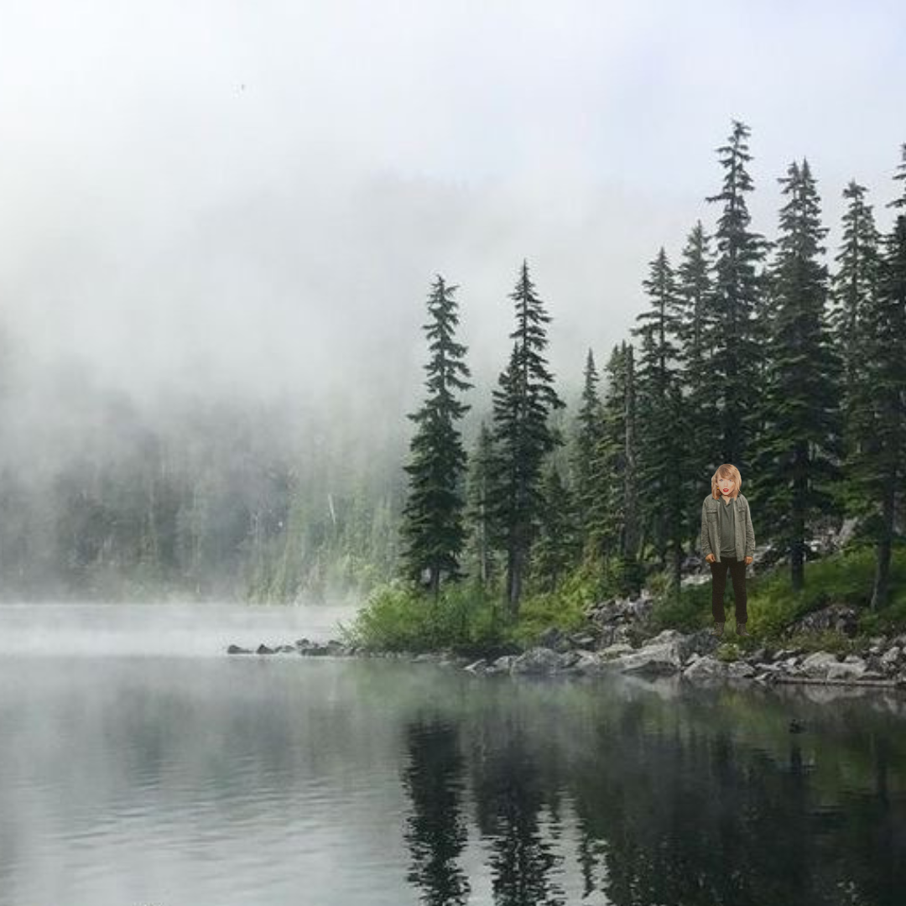

On Aston's 4th Ola Album, "lost", we see Aston's artistic growth and development as a songwriter. Breaking Ola Industry tradition, "lost" is Aston's first original album, and was released as a surprise drop.
With an ethereal and captivating sound, "lost" paints a beautiful picture of Aston's self-discovery across a 6-month time period. Inspired by the likes of Noah Kahan and Taylor Swift.